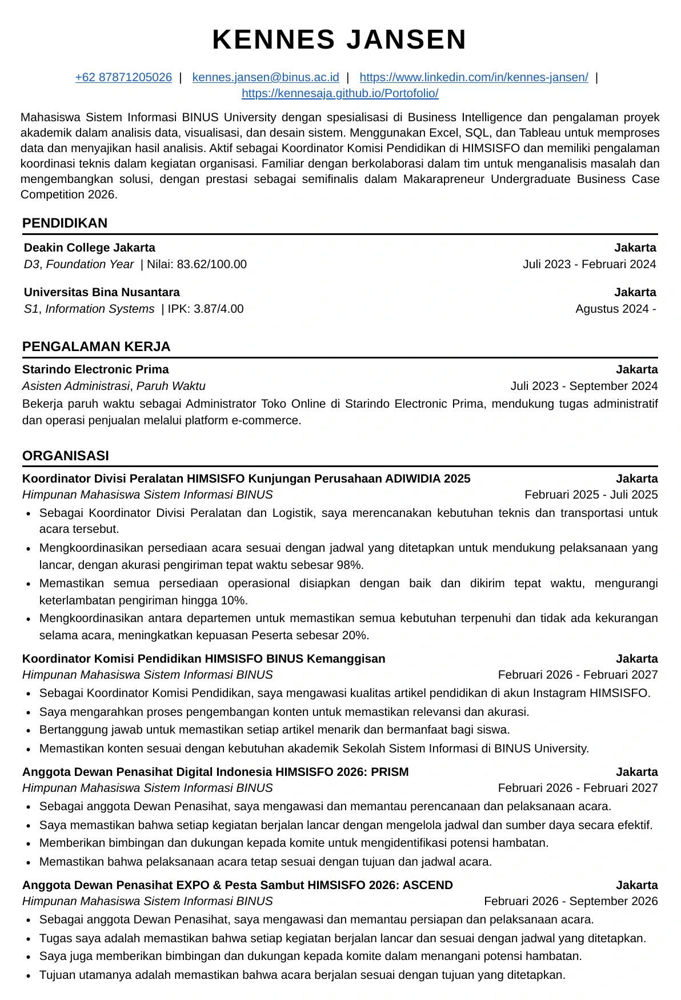
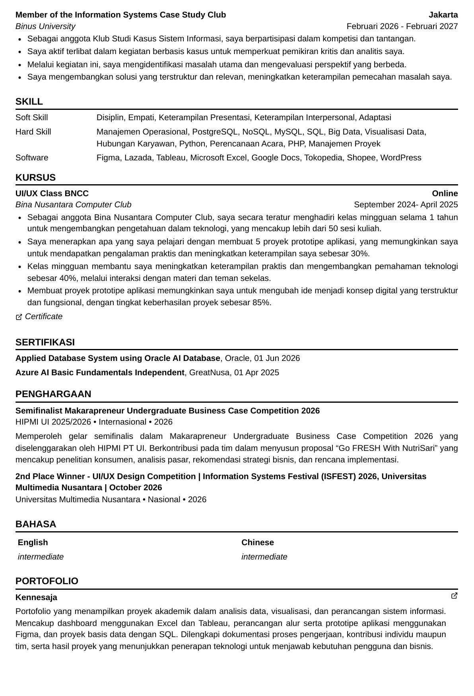

CURRICULUM VITAE
Preview CV.
Kennes Jansen · Bahasa Indonesia · 2 halaman
Gulir untuk membaca kedua halaman. Klik halaman untuk memperbesar tampilannya di tab baru.


CURRICULUM VITAE
Kennes Jansen · Bahasa Indonesia · 2 halaman
Gulir untuk membaca kedua halaman. Klik halaman untuk memperbesar tampilannya di tab baru.

